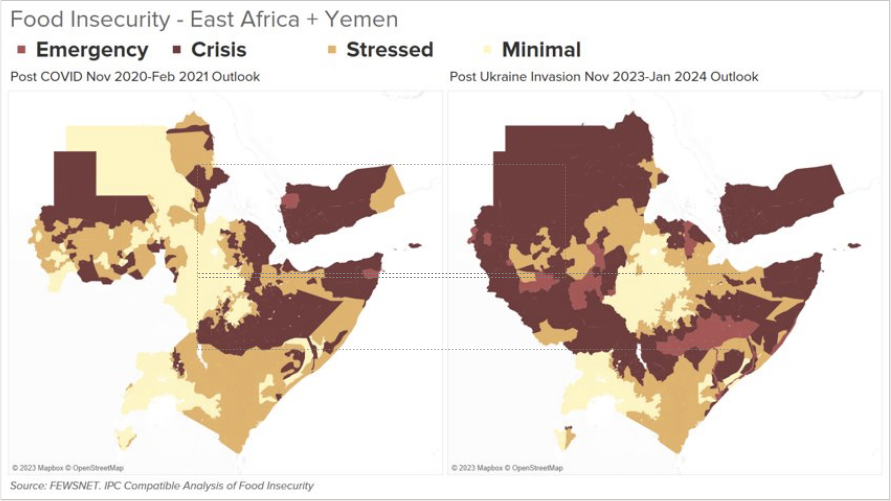
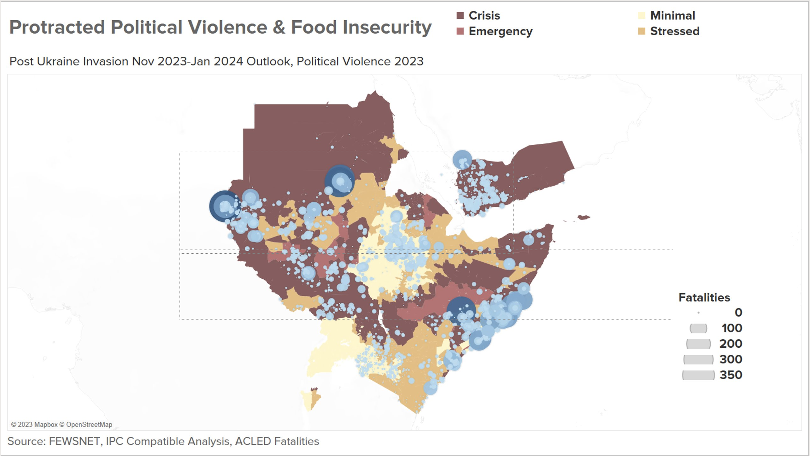

In this report, we explore the potential of combining different datasources and advanced computational techniques to better understand some of the dynamics behind food insecurity in the Horn of Africa. We also propose a way forward for leveraging such data in the future to support anticipatory action for increased food security.
The Horn of Africa is a large peninsula and geopolitical region in East Africa. It is the fourth largest peninsula in the world, located on the easternmost part of the African mainland. It is composed of Ethiopia, Eritrea, Somalia and Djibouti; broader definitions also include parts or all of Kenya, Sudan, South Sudan, and Uganda. The term Greater Horn Region (GHR) can additionally include Burundi, Rwanda, and Tanzania. It lies along the southern boundary of the Red Sea and extends hundreds of kilometres into the Guardafui Channel, Gulf of Aden, and Indian Ocean and shares a maritime borders with the Arabian Peninsula region of Western Asia.*
The region is in a situation of multidimentional protracted crisis*.


More than 26 million people in the region are in a situation of food-security-crisis or worse*